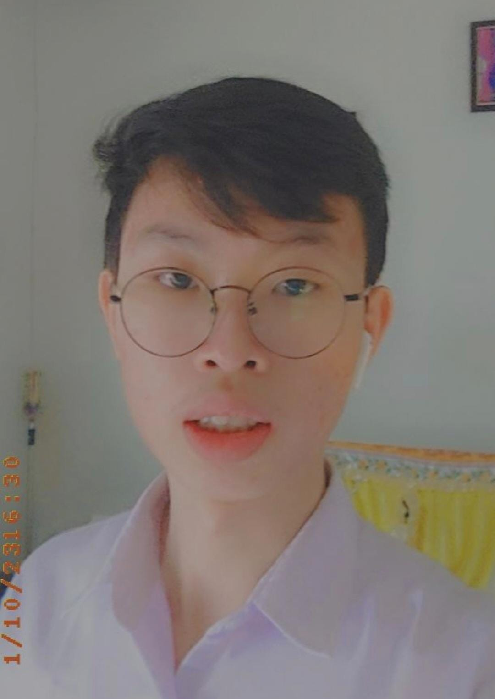

Medan, North Sumatra | andrelim806@gmail.com
I am a dedicated and hardworking second-year undergraduate student majoring in Computer Science, with a strong commitment to my studies and continuous self-improvement. I have a growing interest in full-stack web development and am at the beginning of my journey in learning web technologies. Eager to build a solid foundation in both front-end and back-end development, I am actively exploring various tools and frameworks to expand my skill set.
My natural curiosity drives me to delve deeper into complex problems and innovative solutions, ensuring I stay ahead in a rapidly evolving field. Outside of academics, I enjoy playing games and staying active through badminton, which help me maintain a healthy balance in my life. These hobbies also enhance my strategic thinking and teamwork skills, contributing to my personal and professional growth.
Bachelor of Computer Science, Universitas Sumatera Utara
© 2024 Andre. All rights reserved.